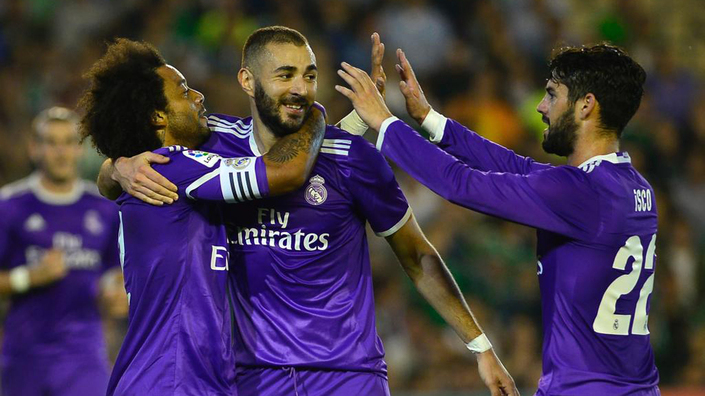

El Madrid se pone morado
EXHIBICIÓN DE PEGADA Y JUEGO CON ISCO Y KROOS A LOS MANDOS PARA VOLVER A LA SENDA DE LA VICTORIA
Ay, el sur. Si ya lo decía Raffaella Carrá. En momentos de bajón, como estos en los que el otoño se abre paso, los días son más cortos y el frío asoma, notar la brisa del sur le cambia la cara a cualquiera. Ay, las reconciliaciones. El Madrid arrasó en el Villamarín en un ejercicio de recuerdo. Volvió a ser lo que siempre fue, lo que siempre funcionó. Juego, velocidad y pegada en una combinación que ríete tú de los cócteles que te cobran a 12 pavos en algún garito de moda.
De la mano de Isco y de Kroos, ante un Betis que fue más aspirina para los dolores blancos que rival serio, olvidó cómo se fue antes del parón FIFA. Zidane se ha pasado dos semanas pensando en finiquitar el conato de crisis que tocaba a su puerta, cantando Silvio Rodríguez y su "ojalá pase algo que te borre de pronto". Su equipo fue la luz cegadora que curó los males.
El Madrid y el fútbol no habían roto, sólo era un enfado pasajero. Aunque duerman en los extremos de la cama, uno de los dos siempre estira una mano o un pie para rozar al otro y saber que sigue ahí, aunque quiera disimular sus ganas de olvidar el frío del colchón y volver al abrazo. Hablando de caricias, quedaos con quien os trate como Kroos acaricia la pelota. Qué ternura, qué calidez, qué preciosidad.